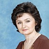

Дошкольное отделение школы № 1190
В 2015 году 54% первоклассников Школы № 1190 пришли из дошкольного отделения.
- Пятницкое шоссе, 25к2
- 2-й Митинский переулок, 5с1
Воспитатели
Воспитатели, которых чаще всего благодарят родители (отзывы и профили сотрудников взяты с официального сайта школы):|
Воспитатель
Шахова Елена Михайловна
6 благодарностей |
 Воспитатель
Соколова Галина Владимировна
Воспитатель
Соколова Галина Владимировна
3 благодарности |
Воспитатель
Полетаева Юлия Евгеньевна
3 благодарности |
Воспитатель
Маслова Ольга Евгеньевна
3 благодарности |
|
Воспитатель
Пирогова Анна Михайловна
3 благодарности |
Воспитатель
Мельникова Татьяна Владимировна
2 благодарности |
Воспитатель
Жукова Ольга Евдомитовна
2 благодарности |

Муз. рук.
Бородулина Татьяна Анатольевна
2 благодарности |
|
Воспитатель
Высоцкая Ирина Григорьевна
1 благодарность |
Воспитатель
Остонова Ирина Васильевна
1 благодарность |
Воспитатель
Григорьева Наталья Борисовна
1 благодарность |
Воспитатель
Сюндюкова Елена Борисовна
1 благодарность |
Отзывы
Данные собраны c официального сайта школы и через форму для отзывов.
Директору ГБОУ Школы №1190
Аникановой Е.М.
Уважаемая Елена Михайловна!
Ассоциация творческих фондов и деятелей культуры для детей и юношества «Искусство без границ» выражает благодарность учителю музыки Ремблевской Людмиле Ивановне за высокий уровень подготовки учеников Тригубчука Никиты и Даньшиной Дарьи к VII Международному фестивалю-конкурсу "Ретро: ХХ век голосами детей ХХI века", конкурсный отбор которого состоялся 20-23 марта в ЦДРИ, гала-концерт 20 мая 2016 года в Концертном зале им. С. В. Рахманинова.
Благодаря чуткому и внимательному отношению педагога к творческой жизни одаренных детей и всесторонней поддержке, нам удается воспитывать молодежь, полную стремлений к высокому искусству.
Желаем Людмиле Ивановне интересных творческих замыслов, успехов во всех добрых делах и начинаниях, неиссякаемой энергии и благополучия.
Надеемся на дальнейшее плодотворное сотрудничество.
Президент Ассоциации «Искусство без границ»
С. В. Дзасохова
Вложенный файл
Аникановой Е.М.
Уважаемая Елена Михайловна!
Ассоциация творческих фондов и деятелей культуры для детей и юношества «Искусство без границ» выражает благодарность учителю музыки Ремблевской Людмиле Ивановне за высокий уровень подготовки учеников Тригубчука Никиты и Даньшиной Дарьи к VII Международному фестивалю-конкурсу "Ретро: ХХ век голосами детей ХХI века", конкурсный отбор которого состоялся 20-23 марта в ЦДРИ, гала-концерт 20 мая 2016 года в Концертном зале им. С. В. Рахманинова.
Благодаря чуткому и внимательному отношению педагога к творческой жизни одаренных детей и всесторонней поддержке, нам удается воспитывать молодежь, полную стремлений к высокому искусству.
Желаем Людмиле Ивановне интересных творческих замыслов, успехов во всех добрых делах и начинаниях, неиссякаемой энергии и благополучия.
Надеемся на дальнейшее плодотворное сотрудничество.
Президент Ассоциации «Искусство без границ»
С. В. Дзасохова
Вложенный файл
Хотим сказать ОГРОМНОЕ СПАСИБО нашим воспитателям Татьяне Владимировне и Анастасии Валерьевне (младшая гр. 1 шк. 1190) за их ОГРОМНЫЙ ТРУД! Мы первый год пошли в садик и очень переживали, так как детки не умели самостоятельно одеваться, кушать и говорить. За этот год детки научились не только самостоятельно одеваться и кушать, но и стали рассказывать стихи и петь песни. Наши страхи остались позади. Мы без страха отдаем ребенка в добрые и надежные руки! Знаем что ребенок всегда под присмотром, и то что он не ест дома, с удовольствием съест в саду!
Отдельное Спасибо за День открытых дверей! Фотки "он-лайн" были замечательные!!!
Большое Спасибо за все праздники, которые были организованы в нашей группе и за те милые подарки, которые готовят нам наши малыши!
Наши воспитатели смогли подобрать индивидуальный подход к каждому ребенку. Дети находятся под постоянным наблюдением. Воспитатели прекрасно занимаются с малышами лепкой, рисованием, читают им книжки, занимаются физкультурой. C ними всегда можно обсудить проблемы воспитания ребенка и получить дельный совет.
А самое главное каждое утро встречают нас УЛЫБКОЙ!
Отдельное Спасибо за День открытых дверей! Фотки "он-лайн" были замечательные!!!
Большое Спасибо за все праздники, которые были организованы в нашей группе и за те милые подарки, которые готовят нам наши малыши!
Наши воспитатели смогли подобрать индивидуальный подход к каждому ребенку. Дети находятся под постоянным наблюдением. Воспитатели прекрасно занимаются с малышами лепкой, рисованием, читают им книжки, занимаются физкультурой. C ними всегда можно обсудить проблемы воспитания ребенка и получить дельный совет.
А самое главное каждое утро встречают нас УЛЫБКОЙ!
Хотим выразить благодарность любимым нашим воспитателям Татьяне Владимировне, Елене Геннадьевне и Анастасии Валерьевне за необыкновенный утренних, посвященный 8 Марта! Спасибо за весеннее настроение, за возможность полюбоваться на деточек, за ваше желание подарить радость.
Спасибо за песни, новые знания, заботу и за чуткое отношение к детям, которое проявляется даже, на первый взгляд, в разных мелочах, за создание уютной атмосферы в группе. Наши детки совсем недавно пришли в детский сад, но за такое короткое время мы узнали какие бывают Воспитатели! Это Воспитатели с большой буквы! Всегда подскажут, помогут, посоветуют, ответят на любые вопросы.А с каким хорошим настроением и улыбками нас встречают и провожают! Всегда чистота и порядок даже в шкафчиках! Спасибо вам огромное! Здоровья и терпения, вам, дорогие воспитатели .
Отдельное спасибо Татьяне Анатольевне, Гульфие Ринатовне, Ольке Николаевне за активное участи и развитие наших детей!!! Работа таких специалистов делает пребывание ребенка в садике более интересным и разнообразным. Спасибо за огромную любовь к детям, профессионализм и терпение к нам, родителям.СПАСИБО ВАМ!!!!
С уважением, родители группы №1.
Спасибо за песни, новые знания, заботу и за чуткое отношение к детям, которое проявляется даже, на первый взгляд, в разных мелочах, за создание уютной атмосферы в группе. Наши детки совсем недавно пришли в детский сад, но за такое короткое время мы узнали какие бывают Воспитатели! Это Воспитатели с большой буквы! Всегда подскажут, помогут, посоветуют, ответят на любые вопросы.А с каким хорошим настроением и улыбками нас встречают и провожают! Всегда чистота и порядок даже в шкафчиках! Спасибо вам огромное! Здоровья и терпения, вам, дорогие воспитатели .
Отдельное спасибо Татьяне Анатольевне, Гульфие Ринатовне, Ольке Николаевне за активное участи и развитие наших детей!!! Работа таких специалистов делает пребывание ребенка в садике более интересным и разнообразным. Спасибо за огромную любовь к детям, профессионализм и терпение к нам, родителям.СПАСИБО ВАМ!!!!
С уважением, родители группы №1.
В этом году наш ребёнок Леоновец Полина заканчивает детский сад #2263. Мы ходили в третью группу к Елене Николаевне и Юлии Евгеньевне. Вся наша семья благодарна нашим воспитателям и,конечно, няне, Надежде Михайловне, за внимание к детям, за тёплое, чуткое отношение. Огромное спасибо за интересные уроки,весёлые праздники, за творческий подход. Спасибо за ваш педагогический труд, за умение привить детям все необходимые качества, которые пригодятся в жизни!!!
От лица нашей семьи выражаем благодарность нашим дорогим воспитателям группы 6а – Масловой Ольге Евгеньевне и Соколовой Галине Владимировне! Уже 4-й год Вы воспитываете нашего сына. Для нас, работающих родителей, Ваша помощь просто неоценима!!! Каждый день вместе с Вами наш ребенок познает окружающий мир. Благодаря Вашему профессионализму и любви к детям он с удовольствием ходит в детский сад. Большое Вам спасибо за Ваши труды! Желаем Вам и вашим семьям крепкого здоровья, счастья и семейного благополучия!!!
Вложенный файл
Вложенный файл
От лица большинства родителей группы 2а выражаю благодарность нашим дорогим воспитателям Жуковой Ольге Евдомитовне и Степиной Юлии Юрьевне! Благодаря их чуткому и душевному отношению к нашим детям, мы родители замечаем как они становятся более самостоятельными и рассудительными. Творческие занятия проводятся в группе регулярно и их результаты каждый раз радуют родителей. Для нас это первый год посещения д/сада полный день и благодаря высокопрофессионализму наших воспитателей адаптация прошла незаметно (без капризов и т.п.). Ребенок каждый день с удовольствием встает утром и не хочет уходить вечером домой, даже во время болезни рвется в сад. Мы очень надеемся что наши воспитатели доведут наших детей до первого класса! В предверии международного женского дня 8 марта хотелось бы пожелать Вам Ольга Евдомитовна и Юлия Юрьевна, крепкого здоровья и семейного благополучия!!!
Вложенный файл
Вложенный файл
Хочу выразить огромную благодарность воспитателям 5-ой группы ГБОУ СОШ 1190 (детский садик 2263) Ирине Григорьевне и Наталье Борисовне!
Спасибо Вам за любовь к нашим детям, за любовь к своему делу, которым вы с таким энтузиазмом занимаетесь. Так же хочу сказать спасибо за космический профессионализм и фантастическое увлечение своей работой. Дети, приходя домой, с увлечением рассказывают о занятиях и играх в садике, просят поиграть в те же игры дома и позаниматься по той же теме. Значит воспитатель правильно преподносит материал, значит детям понравилось, значит дети сегодня узнали что-то новое и проявили большой интерес. Это и есть профессионализм воспитателя!
А чего только стоят поделки, которые дети приносят домой из садика! Мы – родители видим только результат – готовую аппликацию, фигурку, рисунок и т.д. Но мало кто из нас понимает, что за этой поделкой стоит кропотливая увлеченная работа воспитателя, который ищет интересную и увлекательную для детей поделку, дальше сам изучает как ее смастерить, после этого объясняет группе в целом и каждому ребенку в отдельности как ее сделать. И вот готова картинка, фигурка или открытка-подарок, наверное, одна из самых дорогих для мамы. И все это работа воспитателя. Воспитатель не просто следит за детьми, когда они пребывают в садике, а помогает нам, родителям, растить и познавать мир нашим детям.
Еще хочется сказать спасибо за спокойствие, за спокойствие мам и пап. За то, что когда наши дети в садике, мы абсолютно спокойны, мы не переживаем, не волнуемся, мы понимаем что наши дети в безопасности и в надежных руках.
Огромное Вам СПАСИБО от мам и пап группы №5!!!
Спасибо Вам за любовь к нашим детям, за любовь к своему делу, которым вы с таким энтузиазмом занимаетесь. Так же хочу сказать спасибо за космический профессионализм и фантастическое увлечение своей работой. Дети, приходя домой, с увлечением рассказывают о занятиях и играх в садике, просят поиграть в те же игры дома и позаниматься по той же теме. Значит воспитатель правильно преподносит материал, значит детям понравилось, значит дети сегодня узнали что-то новое и проявили большой интерес. Это и есть профессионализм воспитателя!
А чего только стоят поделки, которые дети приносят домой из садика! Мы – родители видим только результат – готовую аппликацию, фигурку, рисунок и т.д. Но мало кто из нас понимает, что за этой поделкой стоит кропотливая увлеченная работа воспитателя, который ищет интересную и увлекательную для детей поделку, дальше сам изучает как ее смастерить, после этого объясняет группе в целом и каждому ребенку в отдельности как ее сделать. И вот готова картинка, фигурка или открытка-подарок, наверное, одна из самых дорогих для мамы. И все это работа воспитателя. Воспитатель не просто следит за детьми, когда они пребывают в садике, а помогает нам, родителям, растить и познавать мир нашим детям.
Еще хочется сказать спасибо за спокойствие, за спокойствие мам и пап. За то, что когда наши дети в садике, мы абсолютно спокойны, мы не переживаем, не волнуемся, мы понимаем что наши дети в безопасности и в надежных руках.
Огромное Вам СПАСИБО от мам и пап группы №5!!!
Коллектив родителей группы № 1А ГБОУ СОШ №1190 (детский сад №2263), выражает огромную благодарность воспитателям Николаевой Елене Николаевне и Пироговой Анне Михайловне, за их добросовестный труд,отзывчивость и заботу о наших детях!
Для маленького человечка очень важно кто будет с ним на первом этапе социальной лестницы. Нашей группе очень повезло, что первыми стали Елена Николаевна и Анна Михайловна, дети очень привязались к ним! Спасибо за тепло и индивидуальный подход. Очень надеемся что наши воспитатели перейдут с нашими детками на следующий учебный год!
Для маленького человечка очень важно кто будет с ним на первом этапе социальной лестницы. Нашей группе очень повезло, что первыми стали Елена Николаевна и Анна Михайловна, дети очень привязались к ним! Спасибо за тепло и индивидуальный подход. Очень надеемся что наши воспитатели перейдут с нашими детками на следующий учебный год!
Уважаемые Ирина Васильевна, Елена Борисовна и Татьяна Александровна! (7 гр)
Выражаем Вам огромную благодарность за вашу работу . Хотим отметить Ваш высокий профессионализм, чуткое отношение к детям, заботу, внимание, доброту и теплоту, индивидуальный подход к каждой семье. Воспитательный процесс организован таким образом, что учитываются все мелочи повседневной жизни в социуме, в семье и в коллективе. Дети с радостью идут в сад, потому что там их встретят любимые воспитатели, с которыми им легко, интересно и можно поделиться детскими секретами. В группе царит комфортная теплая обстановка благодаря пониманию и равноправию. Вы учите наших деток дружить и уважать друг друга, творить и фантазировать, ценить прекрасное, быть честными, добрыми, заботливыми. Наши дети гордятся своими достижениями, с радостью показывают нам свои поделки, с интересом дома повторяют сделанное в детском саду. Шаг за шагом под Вашим чутким руководством дети познают окружающий мир, радость дружбы, свои личные возможности. В группе чистота и порядок, комфорт и уют. Дети сыты и опрятны. Мы полностью доверяем Вам, ведь родителю, когда он оставляет ребенка практически на весь день, очень важно знать, что его чадо в надежных руках. Мы спокойны за жизнь и безопасность наших ребят, ведь рядом с ними настоящая команда профессионалов. Мы очень Вам благодарны. Спасибо! Нам очень с Вами повезло! А новогодний праздник - просто чудо!!!
Выражаем Вам огромную благодарность за вашу работу . Хотим отметить Ваш высокий профессионализм, чуткое отношение к детям, заботу, внимание, доброту и теплоту, индивидуальный подход к каждой семье. Воспитательный процесс организован таким образом, что учитываются все мелочи повседневной жизни в социуме, в семье и в коллективе. Дети с радостью идут в сад, потому что там их встретят любимые воспитатели, с которыми им легко, интересно и можно поделиться детскими секретами. В группе царит комфортная теплая обстановка благодаря пониманию и равноправию. Вы учите наших деток дружить и уважать друг друга, творить и фантазировать, ценить прекрасное, быть честными, добрыми, заботливыми. Наши дети гордятся своими достижениями, с радостью показывают нам свои поделки, с интересом дома повторяют сделанное в детском саду. Шаг за шагом под Вашим чутким руководством дети познают окружающий мир, радость дружбы, свои личные возможности. В группе чистота и порядок, комфорт и уют. Дети сыты и опрятны. Мы полностью доверяем Вам, ведь родителю, когда он оставляет ребенка практически на весь день, очень важно знать, что его чадо в надежных руках. Мы спокойны за жизнь и безопасность наших ребят, ведь рядом с ними настоящая команда профессионалов. Мы очень Вам благодарны. Спасибо! Нам очень с Вами повезло! А новогодний праздник - просто чудо!!!
Если вы нашли ошибку или неточность, пожалуйста, сообщите нам об этом.
Ученик, выпускник или родитель? Оставьте отзыв о детском саде.